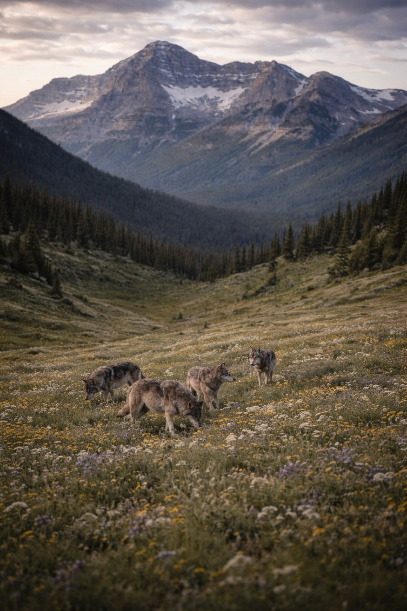

Background
Why CDV resistance matters for wolf reintroduction
Canine distemper virus (CDV) is a paramyxovirus closely related to measles. In wolves, it causes respiratory, gastrointestinal, and neurological disease with case fatality rates that can reach 50–90% in naive populations. Reintroduced wolf packs are already stressed by translocation, unfamiliar territory, and small founding numbers, so a CDV outbreak can be catastrophic.
In Yellowstone, CDV contributed to significant pup mortality between 1999 and 2005, slowing recovery of the Northern Rocky Mountain population during its most critical early years. The Mexican gray wolf (Canis lupus baileyi) recovery program is the most endangered wolf subspecies in the world, with fewer than 200 individuals in the wild. A single outbreak there could meaningfully set back decades of recovery work.
CDV, like many enveloped viruses, requires host cell proteases to activate its fusion protein for cell entry. TMPRSS2 (Transmembrane Serine Protease 2) is one of the key proteases CDV exploits. Disrupting or modifying TMPRSS2 expression could reduce cellular susceptibility to CDV. This is the same mechanism studied extensively in SARS-CoV-2 research, where TMPRSS2 inhibition significantly reduced viral entry.
What is CRISPR-Cas9?
A molecular tool that uses a guide RNA (gRNA) to direct the Cas9 enzyme to a precise location in the genome, where it makes a targeted cut. That cut can disrupt a gene, correct a mutation, or insert new sequence.
What is a gRNA?
A 20-nucleotide RNA sequence that acts as a GPS coordinate for Cas9. It matches the target DNA sequence exactly. This analysis identifies which 20-base windows in the TMPRSS2 gene are the best targets for efficient, safe editing.
What does "off-target risk" mean?
Cas9 can sometimes cut at unintended sites in the genome that partially resemble the target. We use NCBI BLAST to search the entire wolf genome for near-matches, flagging any gRNA with too many close hits as higher risk.
What would this mean in practice?
This is computational prediction only. Experimental validation in cell culture and animal models would be required before any application. The immediate value is as a framework for deciding which targets are worth pursuing in the lab.
Methods
Analysis pipeline
The pipeline is fully open-source and reproducible. Each stage is implemented as a standalone Python module using Biopython and pandas, with NCBI remote BLAST for off-target validation. All code is available on GitHub.
Click any pipeline stage to see details.

Alpine meadow · Uinta ecosystemResults
Candidate gRNA rankings
Of 649 total candidates scanned, 20 were scored and the top 5 were validated against the wolf genome via NCBI BLAST. Four candidates returned zero off-target hits with ≤3 mismatches. The top-ranked candidate, AGTCCTGCTGGATTTCCGGG, achieves a Doench efficiency score of 0.860 with no detectable off-target risk.
| # | gRNA sequence | Str | Position | GC% | Doench | Final score | Off-target risk | Note |
|---|
Important note
Computational predictions only
This analysis is a computational starting point. Every candidate identified here would require experimental validation: first in cell culture to test editing efficiency and specificity in wolf-derived cells, then in appropriate animal models before any consideration of in vivo application. CRISPR-based interventions in wild animal populations also face significant regulatory, ethical, and ecological considerations that extend well beyond this computational work.
The value of this pipeline right now is as a published, citable, open-source framework: demonstrating which computational approaches are feasible for non-model canid species and providing a benchmark dataset for the field.
Hansen, A. (2025). Wolf TMPRSS2 CRISPR gRNA design pipeline (v1.0). Rewild Genomics LLC. GitHub: rewild-genomics/wolf-crispr-grna. Preprint in preparation.